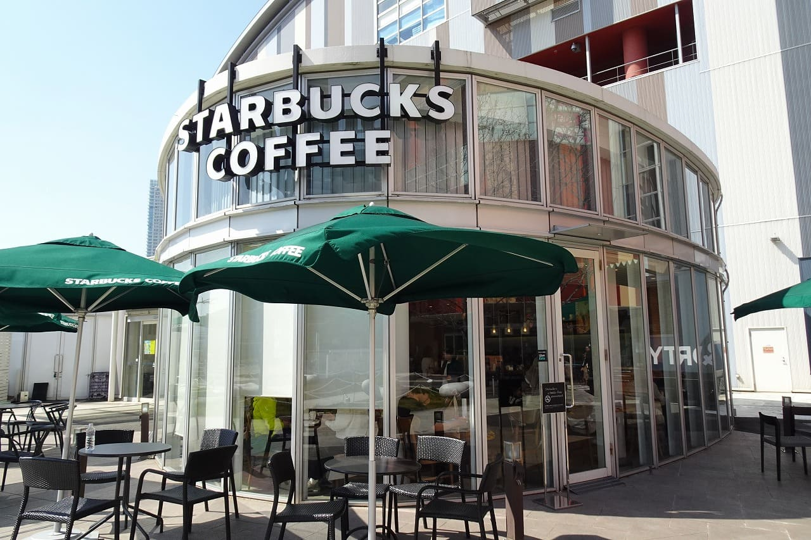
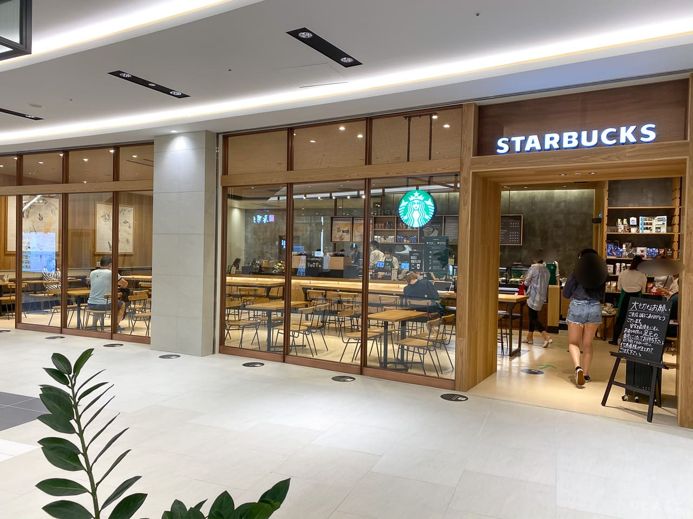

Chapter 01
開斗の生い立ち
幼少期
2000年3月23日生誕
幼少期の見た目はとてもかわいく，保育園で母たちにモテモテだったらしい
（今はその面影すら残っていないが．．．）
少年期
高麗小・中学校で9年間を過ごす．
田舎の学校過ぎて一学年40人程度，周りも自然だらけの場所．
この時にサッカーに出会う
Chapter 02
七海の生い立ち
幼少期
1999年1月20日生誕
実は佐賀県出身．
（3歳までしか佐賀にいなかったため，佐賀の記憶は全くない）
少女期
豊洲という大都会で過ごす
中学受験をし，赤坂にある山脇学園に入学．
ここで親友となるこなっちゃんに出会う．
メンヘラさんたちとは学生時代はほとんどしゃべってないらしい．
Chapter 03
二人の馴れ初め
出会い
2021年10月頃
初めて出会ったのはスターバックスの仕事
七海はSSVとして，開斗はまだ入社して半年程度の時，七海の勤務先に開斗がヘルプとして手伝いに行く．
この時は，特にお互いなんの印象もない
再会
七海がまさかのらら3に副店長として異動．
この時には開斗はSSVとしてコントロールを任せられる程度に成長
初めての1on1であまりよくない印象を与えてたらしい
けど，なぜか2人で飲みに行くことに．．．